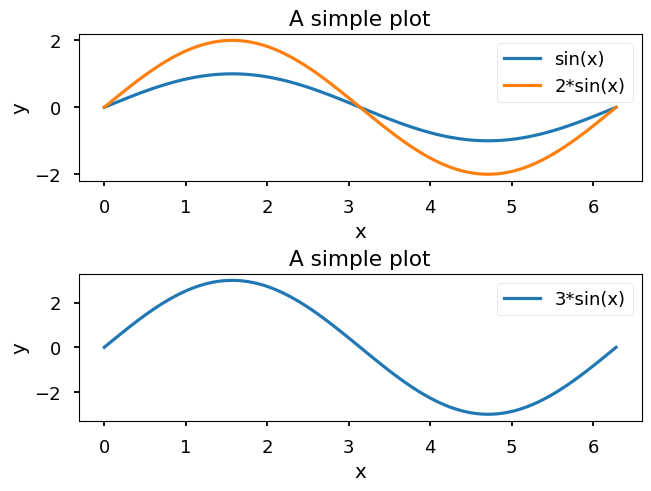
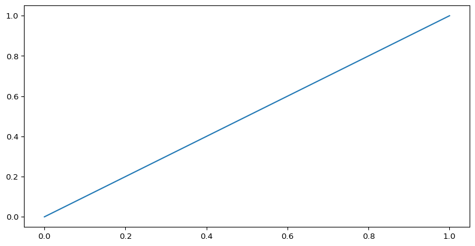

ML-Club - 20.12.23
Can be changed in the matplotlibstyle.py file.
Test outputODE: \[ \begin{align*} \begin{pmatrix} \dot{w} \\ \dot{d} \end{pmatrix} = \begin{pmatrix} w(\alpha - \beta d) \\ d(-\delta + \gamma w) \end{pmatrix} \end{align*} \]
The <1> allows you tag lines to reference later
The directives
#| echo: false
#| eval: trueenables you to commend out the input/output
Using
::: hidden
$$
\DeclareMathOperator*{\argmin}{arg\,min}
$$
:::we can define a latex operator if needed.
\[ \DeclareMathOperator*{\argmin}{arg\,min} \]